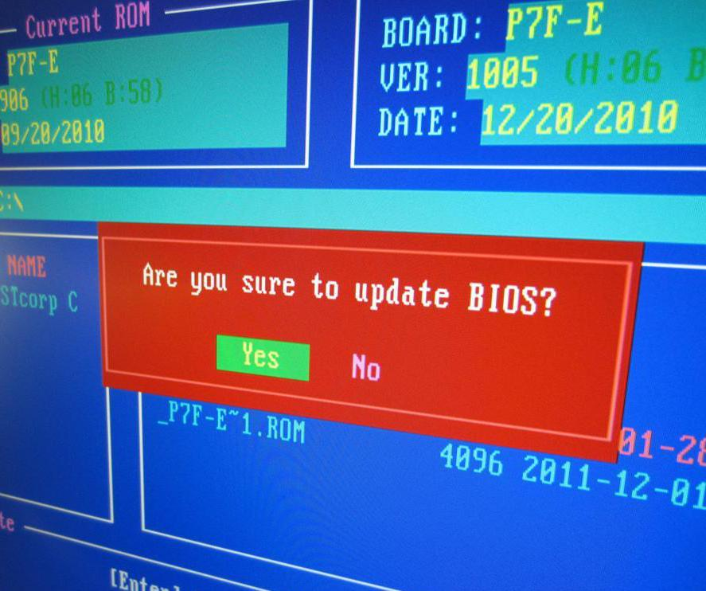

Reformatting a computer will erase the hard drive, resulting in the permanent loss of all data on that drive. Therefore, before you reformat a computer take the time to backup data you would like to keep to a secondary drive or other media. Once this is done, reformatting is fairly simple and straightforward, though it does require a few steps and a few tools. This article focuses on Windows® systems and can serve as an overview of general information, but reading a step-by-step tutorial is recommended, especially if your hard disk is partitioned into several drives.
How to Reformat a Computer
If the drive that you wish to reformat does not contain the operating system, you can reformat a computer from inside Windows using Windows Explorer® and built-in tools. For example, if the operating system is located on the C:\ drive, but the computer also has a D:\ hard drive, Windows can reformat D:\ for you. Simply open Windows Explorer, right-click on the drive of choice, and choose “Format” from the menu options.
There are two types of formatting choices for large, modern drives: FAT32 and NTFS. FAT32 is used for Windows 98 and previous operating systems, while NTFS formatting is recommended for Windows 2000, XP and newer operating systems. If you plan to install DOS programs you should choose FAT32 formatting, as DOS programs cannot read NTFS drives. Otherwise, NTFS is the default choice for modern operating systems.
To reformat a computer including the drive containing the operating system, the job must be done from outside of that operating system, and from outside of the targeted drive. Boot from a genuine Windows operating system CD and answer questions accordingly to navigate your way to the command prompts that will allow you to reformat your C:\ drive and reinstall Windows. You might need to go into your BIOS settings first to configure the motherboard to let you boot from a CD, rather than from the hard drive.
Unfortunately, original equipment manufacturer (OEM) CDs don’t always present the same choices as genuine Microsoft CDs. An OEM CD is usually provided with a new computer system that already has Windows installed, whereas a genuine Microsoft CD is purchased off the shelf in a retail package. The OEM CD might turn the boot process over to the hard disk as soon as it detects Windows is installed. This can be an exercise in frustration since you cannot reformat a computer from inside Windows when the targeted drive holds the operating system.
MS-DOS® tools will allow you to boot to a command line in order to delete or reformat the C:\ drive. You will need to create a DOS-bootable CD or floppy disk. There are various sites online that offer instructions and downloads to do this, including FreeDOS™, an open-source DOS-like operating system that uses the same commands and filenames as original MS-DOS.
Once booted to a command prompt, use the "fdisk" command to bring up a text menu used to supply disk information and carry out commands. You can view the disk’s current structure. If the disk is configured as one large C:\ drive, you can simply choose to delete the C:\ partition. Once the C:\ drive is deleted there is no going back and all data will be lost. Next, place the OEM Windows CD in the drive and reboot. The OEM CD will offer to create a C:\ drive and format that drive for a fresh installation of the operating system.
If you have a hard disk partitioned into several drives and you only want to reformat the C:\ drive, use the "format c:\" command, as deleting C:\ using DOS will require deleting the other partitions or drives as well. DOS will format the C:\ drive in FAT32 because it cannot format in NTFS, but this will allow you to reboot with the OEM operating system CD. You can reformat the C:\ drive in NTFS at this point, if that is your choice.
There are actually several ways to reformat a computer, using various tools and strategies. Sometimes people choose to re-partition a drive when they reformat a computer, making some drives larger, and others smaller. In other instances people want to reformat a computer without touching most of the drives already present. While there are partitioning tools that work within Windows to reallocate space without losing data, the operating system must already be installed and functioning to use these tools. Otherwise, repartitioning can be done in DOS using the “fdisk” command, though this will wipe all data.